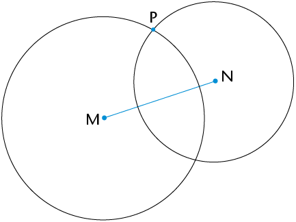
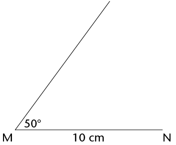

In hierdie hoofstuk sal jy die konstruksie van meetkundige figure, met slegs 'n passer en liniaal, hersien. Jy gaan die konstruksie van loodlyne, halveerlyne van hoeke asook spesiale hoeke hersien en verder ondersoek. Hierdie konstruksies help jou om meer konstruksies asook eienskappe van 2D-figure te verstaan. Jy sal ook die verbande tussen hoeke binne en buite 'n driehoek, sowel as kongruensie van driehoeke ondersoek. Laastens gaan jy meer uitvind oor die hoeklyne van vierhoeke en oor die binnehoeke van verskillende veelhoeke.
Jy het in Graad 8 oor loodlyne geleer.


Lees die inligting en instruksies en doen die konstruksie in jou oefeningboek.
|
Lynstuk MN met punt P op 'n afstand daarvan af word vir jou gegee. Jy moet 'n lyn konstrueer wat loodreg op MN is, sodat die loodlyn deur punt P gaan.
|
Stap 1 Gebruik jou passer om 'n sirkel te trek waarvan die middelpunt die een eindpunt van die lynstuk (N) is en deur punt (P) gaan.
|
|
Stap 2 Herhaal stap 1, maar maak die ander eindpunt van die lynstuk (M) die middelpunt van jou sirkel.  |
Stap 3 Verbind die punte waar die sirkels sny: PQ ⟂ MN
|
Lees die inligting en instruksies en doen die konstruksie in jou oefeningboek.
|
Lynstuk XY met punt Z daarop word vir jou gegee. Jy moet 'n loodlyn konstrueer wat deur Z gaan.
|
Stap 1 Gebruik jou passer om 'n sirkel met middelpunt Z te trek. Maak sy radius kleiner as ZX. Let op die twee punte waar die sirkel XY sny.
|
|
Stap 2 Stel jou passer wyer as wat dit was vir die sirkel met middelpunt Z. Trek twee ewe groot sirkels met middelpunte by die twee punte waar die eerste (swart) sirkel XY sny. Die twee sirkels (groen) sal oorvleuel.
|
Stap 3 Verbind die snypunte van die twee oorvleuelende sirkels. Merk hierdie punte C en D: CD ⟂ XY en gaan deur punt Z.
|
Trek in elk van die volgende twee gevalle 'n lyn wat loodreg op die lynstuk is en deur punt P gaan.


Werk deur die volgende voorbeeld waar twee snydende sirkels gebruik word om 'n hoek te halveer. Doen dan self die stappe in jou oefeningboek.
Om 'n hoek te halveer beteken om dit in twee ewe groot hoeke te verdeel.
|
\(\text{A}\hat{\text{B}}\text{C}\) word vir jou gegee. Jy moet die hoek halveer.
|
Stap 1 Trek 'n sirkel met
middelpunt B om sodoende gelyke lengtes op albei bene
van die hoek af te merk.
|
|
Stap 2 Trek twee ewe groot
sirkels met middelpunte by D
|
Stap 3 Trek 'n lyn van B af deur die punte waar die twee ewe groot sirkels sny. Hierdie lyn sal \(\text{A}\hat{\text{B}}\text{C}\) halveer.
|
Kan jy verduidelik waarom die metode hier bo werk om 'n hoek te halveer?
Kan jy ook sien dat ons nie volle sirkels hoef te teken nie, maar bloot dele van sirkels (boë) kan gebruik om die konstruksie hier bo te doen?
Halveer die hoeke hier onder sonder om 'n gradeboog te gebruik.

Hoeke van 30\(^\circ\), 45\(^\circ\), 60\(^\circ\) en 90\(^\circ\) staan bekend as spesiale hoeke. Jy moet hierdie hoeke kan konstrueer sonder om 'n gradeboog te gebruik.
Jy het geleer hoe om 'n hoek van 90\(^\circ\) te teken, en hoe om 'n hoek te halveer, sonder om 'n gradeboog te gebruik. Gebruik hierdie inligting om 'n hoek van 45\(^\circ\) te teken by punt X op die lynstuk hier onder.
Wenk: Verleng die lynstuk na die linkerkant van X.

Die tekening hier regs dien as ’n voorbeeld.


|
Hoek |
Veelvoude kleiner as 360\(^\circ\) |
Hoek |
Veelvoude kleiner as 360\(^\circ\) |
|
30\(^\circ\) |
30\(^\circ\); 60\(^\circ\); 90\(^\circ\); 120\(^\circ\); 150\(^\circ\); 180\(^\circ\); 210\(^\circ\); 240\(^\circ\); 270\(^\circ\); 300\(^\circ\); 330\(^\circ\) |
45\(^\circ\) |
|
|
60\(^\circ\) |
90\(^\circ\) |
120\(^\circ\)
135\(^\circ\)
270\(^\circ\)
240\(^\circ\)
150\(^\circ\)
In afdeling 10.2 het jy geleer hoe om 'n hoek te halveer. Jy gaan nou die halveerlyne van hoeke in 'n driehoek ondersoek.


Jy behoort te gevind het dat die drie halveerlyne van die hoeke van 'n driehoek in een punt sny. Hierdie punt is dieselfde afstand van elke sy van die driehoek af.
'n Binnehoek is 'n hoek wat tussen twee sye van 'n driehoek lê. Dit is binne-in die driehoek. 'n Driehoek het drie binnehoeke.
Buitehoek is 'n hoek tussen 'n sy van 'n driehoek en 'n ander sy wat verleng word. Dit is buite die gegewe driehoek.

Kyk na \(\triangle\)PQR. Sy drie sye is verleng om drie buitehoeke te skep.
Elke buitehoek het een aangrensende binnehoek (langsaan) en twee teenoorstaande binnehoeke, soos in die volgende tabel beskryf word.

|
Buitehoek |
Aangrensende binnehoek |
Teenoorstaande binnehoeke |
|
1 |
x |
z and y |
|
2 |
y |
x en z |
|
3 |
z |
x en y |


|
Buite \(\angle\) |
|||||
|
Teenoorst. binne \(\angle\)e |


\(\text{L}\hat{\text{M}}\text{N} + \text{M}\hat{\text{L}}\text{N} = \)
Die buitehoek van 'n driehoek is gelyk aan die som van die teenoorstaande binnehoeke.


Twee driehoeke is kongruent as hulle presies dieselfde vorm en grootte het: hulle kan presies bo-op mekaar pas. Dit beteken al drie ooreenkomstige sye en al drie ooreenkomstige hoeke is ewe groot, soos wat in die volgende twee pare gewys word.
|
|
|
\(\triangle\)ABC \(\equiv\) \(\triangle\)DEF en \(\triangle\)GHI \(\equiv\) \(\triangle\)JKL. In elk van die pare van driehoeke is die ooreenstemmende hoeke en sye gelyk.
Om te bepaal of twee driehoeke kongruent is, hoef ons nie te weet wat die afmetings van al drie sye en al drie hoeke is nie, maar ons het sekere minimum afmetings nodig. Jy gaan nou ondersoek instel oor watter stelle afmetings slegs een moontlike driehoek gee.
|
Stap 1 Konstrueer MN = 10 cm en die 50\(^\circ\) hoek by M, al weet jy nie wat die lengte van die onbekende sy (MP) is nie.  |
Stap 2 \(\hat{\text{N}}\) onbekend, maar NP = 8 cm. Konstrueer dus ’n boog 8 cm van N af. Elke punt op die boog is 8 cm van N af.
|
|
Stap 3 Punt P moet 8 cm van N af wees en op die onbekende sy van die driehoek val. Die boog sny die derde sy by twee punte, so P kan by enige punt wees. Twee driehoeke is dus moontlik en albei voldoen aan die gegewe voorwaardes, d.w.s. MN = 10 cm, NP = 8 cm en \(\hat{\text{M}}\) = 50\(^\circ\).  |
|
|
Voorwaardes |
Kongruent |
|
3 sye (SSS) |
|
|
2 sye (SS) |
|
|
3 hoeke (HHH) |
|
|
2 hoeke en ’n sy (HHS) |
|
|
2 sye en ’n hoek nie tussen die sye nie (SSH) |
|
|
2 sye en ’n hoek tussen die sye (SHS) |
|
|
Reghoekig met die skuinssy en ’n sy (90°SS) |
'n Hoeklyn is 'n reguit lyn in 'n figuur wat twee hoekpunte van die figuur verbind, waar die hoekpunte nie langs mekaar is nie.

Op die volgende bladsy is twee oorvleuelende sirkels met middelpunte A en B. Die sirkels is dieselfde grootte.
'n Middelloodlyn is 'n lyn wat 'n ander lyn teen 'n regte hoek (90\(^\circ\)) in die helfte sny.

Hier onder is twee oorvleuelende sirkels met middelpunte D en E. Die sirkels is verskillende groottes.


|
Vierhoek |
Hoeklyne gelyk |
Hoeklyne halveer |
Hoeklyne sny teen 90\(^\circ\) |
|
Parallelogram |
|||
|
Reghoek |
|||
|
Vierkant |
|
Aantal \(\triangle\)e |
2 |
||
|
Som van \(\angle\)e |
\(2 \times 180^\circ = 360^\circ\) |
|
Aantal \(\triangle\)e |
|||
|
Som van \(\angle\)e |
|
(a) 'n Vierhoek met hoeklyne wat loodreg op mekaar is en wat mekaar halveer |
Vlieër |
|
(b)'n Vierhoek met hoeklyne wat loodreg op mekaar is maar net een van die hoeklyne halveer die ander een |
Kongruent |
|
(c) 'n Vierhoek wat ewe lang hoeklyne het wat mekaar halveer |
Buitehoek |
|
(d) Figure wat presies dieselfde grootte en vorm het |
Ruit |
|
(e) In die helfte sny |
Loodlyne |
|
(f) 'n Hoek wat buite 'n geslote figuur gevorm word: dit is tussen 'n sy en 'n verlengde sy van die figuur |
Halveer |
|
(g) Lyne wat mekaar teen 'n hoek van 90\(^\circ\) sny |
Spesiale hoeke |
|
(h) 90\(^\circ\), 45\(^\circ\), 30\(^\circ\), 60\(^\circ\) |
Reghoek |